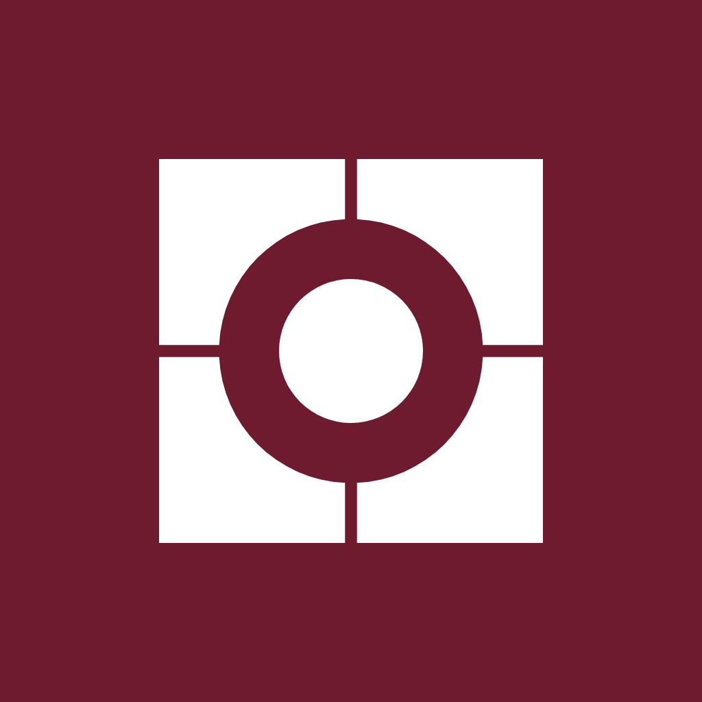
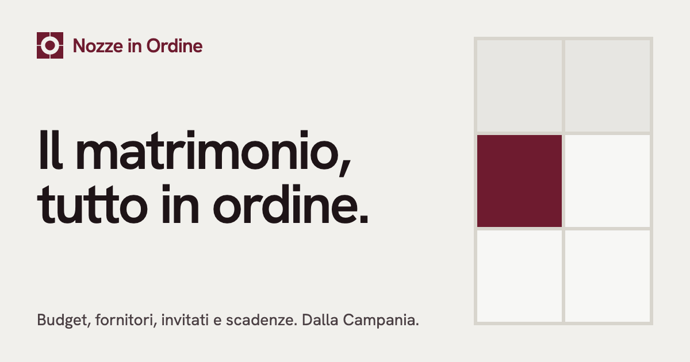

Identità visiva.
Guida al marchio di Nozze in Ordine. Versione 1.0, 23 ottobre 2026. Cosa abbiamo deciso, perché, e come usarlo senza doverci chiedere ogni volta.
Le riggiole, posate in ordine.
Nel chiostro maiolicato di Santa Chiara, a Napoli, ogni tassello dipinto sta al suo posto. In napoletano si chiamano riggiole. Un matrimonio si organizza allo stesso modo: budget, fornitori, invitati, scadenze, tante tessere piccole che devono stare insieme.
Il marchio e il prodotto lavorano su questa immagine: tessere modulari, una fuga stretta tra l'una e l'altra, un solo colore per l'azione, una serif editoriale per i titoli. Niente rose, calligrafie o oro: è il linguaggio di quasi tutti i servizi per matrimoni, e non dice nulla di noi. Il brief creativo (mediterraneo, editoriale, rassicurante) guida ogni scelta.
Cosa abbiamo guardato
Le riggiole del chiostro di Santa Chiara (1739-42) sono descritte dalle fonti con celeste, giallo e verde, in linea con cielo, vite e limoni del giardino; la ceramica di Vietri sul Mare con blu, giallo, verde e rosso. Da qui il blu ceramica, la terracotta e l'oliva. Il rapporto Pinterest sul 2026 cita merlot, fico e oliva e la tipografia con personalità; le guide di stampa parlano di serif a contrasto e di date in grande. Le reference del brief (studi italiani di wedding planning e fotografia) confermano numerazioni di sezione, titoli in minuscolo e foto di luoghi veri.
Fonti: Pinterest, Wedding trend report 2026 · Photobox, tendenze 2026 · FAI, Complesso monumentale di Santa Chiara · Comune di Napoli · italia.it, Vietri sul Mare · StationeryHQ, tendenze 2026 (fonte di un fornitore di stampa: da leggere con cautela). Le date del chiostro non coincidono del tutto tra le fonti.
Prima e dopo
| Prima | Ora |
|---|---|
| Corsivo Pinyon Script | Titoli in DM Serif Display |
| Bodoni Moda per i titoli | Interfaccia e dati in DM Sans |
| Filetti oro e sigillo | La fuga di 4px, niente linee |
| Icone in cerchio | Frammenti reali del prodotto |
| Scheda cruscotto con ombra | Pavimento di tessere, senza ombre |
| Bordeaux e avorio | Bordeaux, avorio caldo e ceramica |
| Hero su cruscotto | Hero con foto, titolo e tessere |
Quattro riggiole e un anello.
Il marchio è un quadrato di quattro tessere, separate da una fuga di due unità, con un anello tagliato al centro e un sasso pieno dentro. Si legge come una tessera posata, come un anello, come un'O di ordine. Quando il sito si apre, le quattro tessere ruotano e si mettono al loro posto: è l'unico movimento del marchio.
Spazio di rispetto: metà dell'altezza del marchio su ogni lato.
Misure minime: marchio 20 px, lockup 120 px di larghezza.
Colori: bordeaux su avorio o su bianco; bianco su bordeaux o su inchiostro; inchiostro solo per stampa monocromatica. Il nome si scrive in DM Serif Display.
File
- lockup.svg, ink, bianco
- mark.svg, ink, bianco
- wordmark.svg, ink, bianco
- mark-scrambled.svg (solo per l'animazione)
- favicon.svg, avatar.png, og.png


Non farlo
Avorio, bordeaux e ceramica.
La palette viene dal brief creativo e dalla ceramica del chiostro: fondo caldo e neutro, un solo colore per l'azione, il blu per ciò che si può seguire o scegliere, l'oliva per i dettagli. Il terracotta è il colore dei pulsanti principali, su sito, dashboard ed email; il bordeaux è quello del marchio.
- Avorio caldo#F5F0E7Fondo della pagina
- Inchiostro#25241FTesto
- Bordeaux#702F43Marchio, tessera in corso, criticità
- Blu ceramica scuro#386070Link e opzioni scelte
- Tessera#FBF8F2Tessere non ancora posate
- Tessera posata#EBE4D6Tessere passate, righe
- Fuga#DCD2BFLa malta tra le tessere
- Testo secondario#514C45Note e didascalie
Ceramica: dettagli e stati, mai testo
- Blu ceramica#5F8794Da venire, motivi grafici
- Terracotta#B75F45Rifiutato, motivi grafici
- Verde oliva#465044Titoli secondari, struttura
- Oliva chiaro#6F7F52Confermato, pagato
72% avorio e tessere16% inchiostro9% bordeaux3% ceramica
Contrasto (WCAG 2)
| Coppia | Rapporto | Uso |
|---|---|---|
| Inchiostro su avorio | 13,7 : 1 | testo |
| Testo secondario su avorio | 7,5 : 1 | note, didascalie |
| Bordeaux su avorio | 8,5 : 1 | titoli di accento, numeri |
| Bianco su bordeaux | 9,6 : 1 | pulsanti, sezioni a campo pieno |
| Blu ceramica scuro su avorio | 6,0 : 1 | link e selezioni |
| Bianco su blu ceramica scuro | 6,8 : 1 | opzione scelta nei moduli |
| Terracotta scura su avorio | 5,4 : 1 | numeri di sezione |
| Verde oliva su avorio | 7,4 : 1 | titoli secondari |
| Blu ceramica su avorio | 3,4 : 1 | solo grafica: mai testo |
| Terracotta su avorio | 3,9 : 1 | solo grafica: mai testo |
Soglia 4,5 : 1 per il testo, 3 : 1 per la grafica. Gli stati si leggono anche dalle parole ("In corso", "Confermato"): il colore non basta mai da solo.
Una serif, una sans.
DM Serif Display per titoli e messaggi · DM Sans per interfaccia
DM Serif Display ha un solo peso, più il corsivo; DM Sans 400, 500, 600, 700. Entrambi sotto SIL Open Font License, ospitati sul nostro sito: nessun servizio esterno. Nelle tabelle, nei prezzi e nelle date si usa solo DM Sans, con cifre tabulari: 26.000 €.
Regole: titoli in minuscolo con il punto finale, come nelle riviste; mai tutto maiuscolo con spaziatura; il corsivo serve solo al sottotitolo dell'hero; la serif non entra mai nelle tabelle, nei moduli e nei dati. Il numero di sezione ("N° 01") è in DM Sans, terracotta scura.
La fuga: quattro pixel tra una tessera e l'altra.
Ogni modulo del sito e del prodotto è una tessera. Tra due tessere c'è sempre la stessa fuga di 4 px, del colore della malta. Le tessere si distinguono per tono e per dimensione: una grande, due medie, una larga, mai una parete di riquadri uguali.
Gli angoli sono vivi. Ombre solo se servono a separare due livelli, e finora non servono. La tessera già posata (la scadenza passata) è più scura, quella da venire è chiara, quella in corso è bordeaux a campo pieno.
Tessere già posate, tessera in corso, tessere da venire.
Il bordo ceramico
Il motivo delle riggiole compare in pochi punti scelti, mai come sfondo: il bordo sopra le sezioni a campo pieno e a fine pagina, il marchio, gli stati. È una fascia di 14 px con quarti di cerchio in blu ceramica e terracotta su tessere sabbia e avorio.
Stati nel prodotto
Riggiole vere, non coppie in posa.
Le immagini mostrano il mondo in cui lavoriamo: tavole all'aperto, cortili e chiostri, le riggiole di Napoli e le maioliche d'Italia, la luce naturale. Mai foto di coppie, mani con anelli, bokeh o corone di fiori. Un'immagine trovata non è mai presentata come nostra, né come un nostro cliente.
Colore naturale, nessun filtro, angoli vivi. Tre proporzioni: 3:2 per le foto grandi, 4:5 per le laterali, 2,8:1 per le fasce. Ogni didascalia dice che cosa si vede. Il credito sta in fondo alla pagina.


Le tessere si posano.
Il movimento serve a mostrare l'ordine, mai a decorare. Le cose arrivano al loro posto, una dopo l'altra, e poi stanno ferme.
- Ingresso: sale di 28 px con dissolvenza, 700 ms, curva (0,2 · 0,7 · 0,2 · 1), a scaglioni di 60-90 ms. Una sola volta.
- Marchio: le quattro tessere ruotano di 180 gradi e si posano, 900 ms, a scaglioni di 100 ms, solo al caricamento.
- Date: quando cambi la data del sì le tessere si ricalcolano e si ripongono in 500 ms.
- Pulsanti e tessere: si alzano di 2-3 px al passaggio del mouse; la freccia scivola di 4 px.
- Immagini: dissolvenza lenta tra due scatti dello stesso viale (16 s) e un ingrandimento quasi impercettibile (28 s).
- Con "riduci movimento" attivo tutto resta fermo e visibile.
Le quattro tessere si posano al caricamento: la stessa idea del marchio.
Preciso, caldo, senza promesse.
Scriviamo come una persona che mette a posto le cose: frasi corte, parole concrete, nessuna promessa su funzioni o prezzi che non esistono ancora. Alle coppie si dà del voi, alle wedding planner e nei moduli del tu.
Parole da evitare: magico, sogno, perfetto, rivoluzionario, esclusivo. Niente punti esclamativi. Slogan: "Il tuo sì, un tassello alla volta." Sottotitolo: "Tutto il matrimonio, finalmente in ordine." Titoli di sezione: "Ogni cosa al suo posto.", "Meno caos. Più controllo.", "Pensato per i matrimoni di qui.", "Comincia a mettere tutto in ordine."
Dove si usa.

Avatar, 1024 px (profilo Instagram e WhatsApp)
Anteprima social, 1200 × 630 (og.png)Firma email: Felice Mondo · Nozze in Ordine · info@nozzeinordine.com · nozzeinordine.com. Solo testo, in inchiostro; il marchio non si inserisce nelle email dei primi contatti, per non farle sembrare una newsletter.
Messaggi di primo contatto: restano scritti a nome di Felice, dal suo profilo, senza grafica.
Token per chi costruisce.
:root {
--ground: #F5F0E7; /* avorio caldo */
--ink: #25241F;
--muted: #514C45;
--accent: #702F43; /* bordeaux: marchio e campo pieno (l'azione principale è terracotta) */
--accent-ink: #FFFFFF;
--blu: #5F8794; /* blu ceramica: solo elementi grafici */
--blu-ink: #386070; /* blu ceramica per testo, link e selezioni */
--terra: #B75F45; /* terracotta: dettagli grafici */
--terra-ink: #9B4A32; /* terracotta per testo */
--olive: #465044; /* verde oliva: titoli secondari */
--olive-soft: #6F7F52; /* stato confermato */
--tile: #FBF8F2; /* tessera */
--tile-laid: #EBE4D6; /* tessera già posata */
--grout: #DCD2BF; /* fuga */
--serif: "DM Serif Display", Georgia, serif; /* titoli */
--font: "DM Sans", "Helvetica Neue", Arial, sans-serif; /* interfaccia, dati, prezzi */
--joint: 4px; /* la fuga */
}
Gli stessi valori sono in tokens.css e nel foglio di stile del sito.
Note e limiti.
- Questa guida definisce l'aspetto, non il nome. La ricerca su UIBM e TMview non ha trovato risultati, ma non è un parere legale: prima del deposito serve un consulente in proprietà industriale, anche perché il nome è descrittivo.
- La palette e i caratteri seguono il brief creativo (avorio caldo, blu ceramica, terracotta per l'azione, verde oliva, bordeaux per il marchio; DM Serif Display e DM Sans). I valori sono proposte: i contrasti sono verificati qui sopra.
- Le reference del brief sono state aperte e lette solo per principi (numerazioni, tipografia, fotografia di luoghi veri): nessun asset, testo o layout è stato copiato.
- Non c'è un'area editoriale su ispirazioni e tradizioni: il brief la valuta solo se utile agli obiettivi, e per ora distrarrebbe dallo strumento.
- Le foto sono di Sailko (CC BY 3.0) e, per Villa Rufolo, Leandro Neumann Ciuffo (CC BY 2.0), da Wikimedia Commons: il credito è obbligatorio e compare in fondo alle pagine. Non sono immagini di Nozze in Ordine né di suoi clienti.
- DM Serif Display e DM Sans sono sotto SIL OFL e ospitati sul sito (cartella fonts): non serve nessun servizio esterno e non si invia nulla a Google.
- I dati nei riquadri del sito (budget, preventivi, invitati, eventi, scaletta) sono di esempio e vanno sostituiti o dichiarati tali.
- La riga "Prova a mano: 3 planner e 5 coppie" sul sito riprende gli obiettivi del Piano operativo. Se non vuoi renderli pubblici, si toglie in un punto solo.